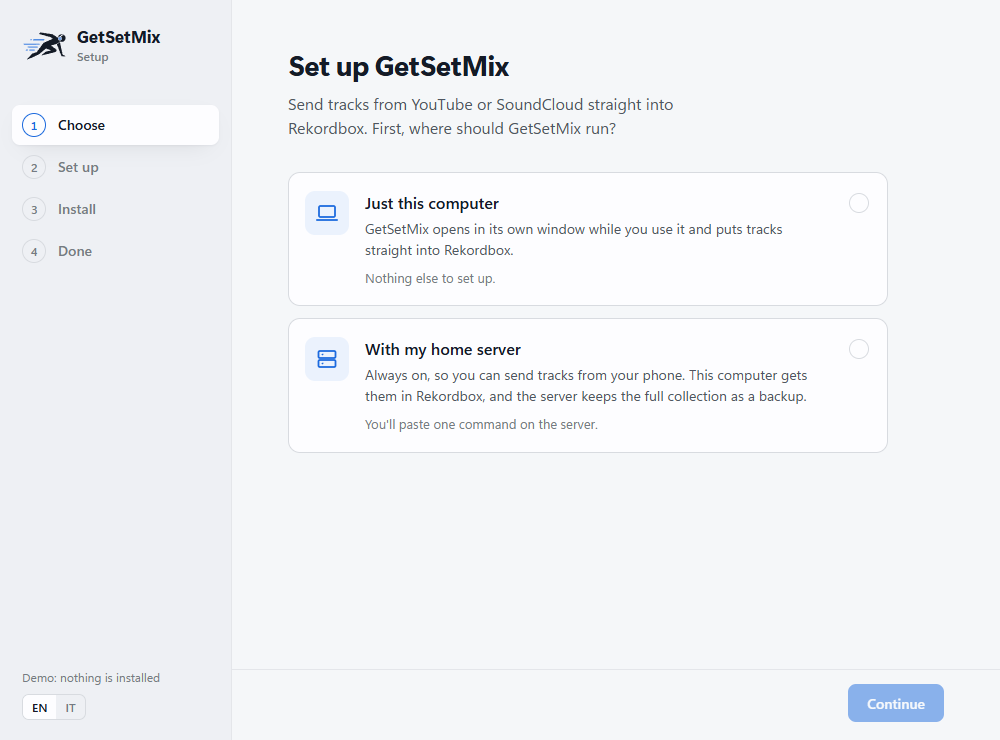

Documentation
GetSetMix is a single-container FastAPI service with a vanilla-JS UI. State lives in SQLite under the data directory; downloads land directly in your music library, and the Rekordbox companion adds them to your collection (or, without it, they are appended to a rekordbox.xml).
Use GetSetMix only for content you have the rights to download.
GetSetMix Setup
Download GetSetMix Setup from the latest release and open it: GetSetMix-Setup-windows-x64.exe on Windows, GetSetMix-Setup-macos.zip on macOS (unzip, then right-click GetSetMix Setup ▸ Open the first time). Windows may say it doesn't know the publisher: More info ▸ Run anyway. Neither build is signed yet.

Setup asks one question, where GetSetMix should run:
- Just this computer. Setup downloads the app together with ffmpeg and Deno (checked against pinned checksums) and adds a GetSetMix shortcut. GetSetMix opens in its own window and stops when you close it. Tracks go to the folder you choose (default
Music/GetSetMix) and straight into Rekordbox. - With my home server. GetSetMix runs on the server all the time, so you can share tracks to it from your phone. This computer receives them in Rekordbox, and the server keeps the full collection.
Either way Setup ends by installing the Rekordbox companion: open Rekordbox with the Rekordbox (GetSetMix) shortcut and new tracks are in the GetSetMix playlist, without any XML.
With a home server
- Paste one command on the server. Setup shows it, with a one-time code:
curl -fsSL http://<this computer>:47321/s/<code> | sudo sh. Open a terminal on the server (ssh you@server, or its own keyboard) and paste it. If Windows asks whether Setup may use the network, choose Allow. What does this command run? in Setup shows the script. - Choose. The server reports what it has (Docker, Kubernetes / MicroK8s / k3s, an existing GetSetMix, Tailscale, free space). Pick where the music lives and whether to update automatically. Without Docker or Kubernetes, Setup installs Docker with its official installer.
- Setup installs. The server installs GetSetMix with Watchtower (Docker) or Keel (Kubernetes) for automatic updates, or keeps a GetSetMix that's already running, with its tracks and settings: it switches it to one copy at a time, always pulls the newest image, turns on updates and restarts it once. Each step shows up in Setup as it happens.
- This computer is paired. New tracks download to it every 15 minutes while it's on (on battery too) and whenever you open Rekordbox through the shortcut. Run Setup on a second computer to pair it as well.
The server is the backup. Tracks only travel from the server to the computer: deleting one on the computer, or the computer breaking, never touches the server's copy, and a new computer downloads the collection again. If the server's music folder is already synced to this computer (Nextcloud, Syncthing), choose My server's music folder is already synced here and Setup only watches that folder.
The phone app needs HTTPS. Browsers only install an app (and offer it in the share menu) from a secure address. When the server runs Tailscale, Setup turns on HTTPS with tailscale serve and shows a QR code for your phone. Without it, the phone can still open GetSetMix on your home Wi-Fi, but can't install it or share to it.
Docker Compose
# deploy/docker-compose.yml — edit the music path first
services:
getsetmix:
image: ghcr.io/Fre0Grella/getsetmix:latest
ports: ["8765:8765"]
volumes:
- getsetmix-data:/data
- /path/to/your/music:/music
environment:
GSM_LANGUAGE: en # or it
# GSM_AUTH_TOKEN: change-me # enable if exposed
volumes:
getsetmix-data:
docker compose -f deploy/docker-compose.yml up -d # open http://localhost:8765
The image bundles ffmpeg and runs as a single process well under 1 GB of RAM. /data holds the SQLite database, config, covers and the default XML; /music is your library root — files are written straight into it.
Kubernetes
Plain manifests live in deploy/k8s/getsetmix.yaml: a namespace, a ConfigMap, PVCs for data and music, a Deployment with liveness/readiness probes and Prometheus scrape annotations, and a Service. An Ingress example is included commented out.
kubectl apply -f deploy/k8s/getsetmix.yaml kubectl -n getsetmix get pods
replicas: 1withstrategy: Recreateis intentional — state is SQLite on a PVC, so never scale this Deployment.- Replace the
musicPVC withhostPathor NFS if your library already exists on a node or NAS. - Images are published multi-arch (amd64 + arm64) to GHCR by the release workflow, so it runs on a Pi-based cluster too.
Local app mode
GetSetMix Setup installs this for you (Just this computer). By hand: it starts the server and opens the browser, like a desktop app (--window opens it in its own window and stops when that closes). Prebuilt executables for Windows, macOS and Linux are attached to every GitHub Release (no Python needed; data lives in ~/.getsetmix, ffmpeg still required on PATH). Or run from source:
pip install -r requirements.txt # ffmpeg must be on PATH: # Linux: apt install ffmpeg · macOS: brew install ffmpeg · Windows: winget install ffmpeg python run_local.py # opens http://127.0.0.1:8765 python run_local.py --port 9000 --no-browser
Daily workflow
- Paste link — the URL on your clipboard is added. Playlists fan out into one editable row per entry; duplicates of URLs you've already ingested are flagged.
- Rows resolve metadata in the background. Fix title and artist (both required), pick a genre from the DJ-oriented list, optionally set album. The camera button on the artwork opens cover search and upload.
- Download starts the batch. The ×N selector next to it overrides download parallelism for this batch only (the global default is 2). Edits lock once a track is queued.
- Watch per-track states and the batch bar. Cancel download stops in-flight tracks and returns them to staged. A failed track shows its error and a retry button — the rest of the batch continues.
- When tracks show Done, refresh the rekordbox xml tree in Rekordbox and find them in the Inbox playlist.
Rekordbox setup
With GetSetMix Setup there is nothing to configure: the companion writes new tracks into the Rekordbox collection itself, in a GetSetMix playlist, each time you open Rekordbox with the Rekordbox (GetSetMix) shortcut (Rekordbox must be closed while its database is written). Without the companion, use the XML instead. One-time configuration in Rekordbox:
- Open Preferences ▸ Advanced ▸ Database ▸ rekordbox xml and point it at the XML path shown in GetSetMix settings (default
<data>/rekordbox/getsetmix.xml). - In the sidebar, enable the rekordbox xml source (Preferences ▸ View ▸ Layout if hidden).
- After each batch, right-click the xml tree and reload — new tracks appear in the configured playlist (default Inbox). Drag them into your collection from there.
Run the service where Rekordbox can see the same file paths the XML contains — e.g. sync the library folder with Nextcloud/Syncthing to your DJ machine, or mount it over SMB, keeping the same drive/path layout, or set the library root to a path that matches on both machines.
The writer is conservative: it appends with incrementing TrackIDs, writes atomically, and if the XML on disk is ever corrupt it backs it up as *.corrupt.xml and starts a fresh one rather than failing the batch.
Keeping the inbox clean with your collection XML
Export your full collection from Rekordbox (File ▸ Export Collection in xml format) and set its path as Rekordbox collection XML in Settings (or GSM_COLLECTION_XML_PATH). Before each batch, GetSetMix compares the inbox XML against the collection — matching by file location, with a title + artist fallback — and removes tracks you've already imported. The Inbox playlist then only ever lists songs still missing from your collection, instead of growing forever.
Filename templates
Set the template in Settings or via GSM_FILENAME_TEMPLATE. Available tokens:
| Token | Value |
|---|---|
{title} | Track title (after your edits) |
{artist} | Artist |
{album} | Album, omitted when empty |
{genre} | Genre, omitted when empty |
{source} | Source site, e.g. youtube |
{id} | Source video/track ID |
Illegal filesystem characters are stripped, separators left behind by empty tokens are collapsed, and name collisions get a (2)-style suffix with a warning on the track.
Configuration
Everything is editable from the gear icon and persisted to <data>/config.json. Environment variables override on boot:
| Variable | Default | Purpose |
|---|---|---|
GSM_DATA_DIR | ./data (/data in Docker) | SQLite DB, config, covers, default XML location |
GSM_LIBRARY_ROOT | ./music (/music) | Downloads land directly here |
GSM_XML_PATH | <data>/rekordbox/getsetmix.xml | Inbox XML path (new downloads) |
GSM_COLLECTION_XML_PATH | unset | Full Rekordbox collection XML — enables the inbox purge |
GSM_PLAYLIST_NAME | Inbox | Target playlist inside the XML |
GSM_OUTPUT_FORMAT | mp3 | mp3 (320 kbps) or flac — global only |
GSM_CONCURRENCY | 2 | Global parallel-download default (1–8) |
GSM_FILENAME_TEMPLATE | {artist} - {title} | See filename templates |
GSM_LANGUAGE | en | en or it |
GSM_AUTH_TOKEN | unset | Static token auth |
GSM_BASIC_USER / GSM_BASIC_PASS | unset | HTTP Basic auth alternative |
Authentication
GetSetMix is private by default — run it on your LAN or tailnet with no auth. If you expose it, set either a static token or Basic credentials. With auth enabled, the API and /metrics return 401 without credentials; the UI asks for the token once and keeps it in the browser.
# any of these work with GSM_AUTH_TOKEN=sekret curl -H "X-Auth-Token: sekret" http://host:8765/api/tracks curl -H "Authorization: Bearer sekret" http://host:8765/api/tracks curl "http://host:8765/metrics?token=sekret" # for Prometheus scrape_configs
API
| Endpoint | Purpose |
|---|---|
POST /api/tracks {url} | Add a URL; playlists fan out. Returns created ids and a duplicate flag. |
GET /api/tracks | All rows plus active download count and busy flag. |
PATCH /api/tracks/{id} | Edit metadata — only while staged or after an error (409 once queued). |
DELETE /api/tracks/{id} | Remove a row. |
POST /api/tracks/{id}/cover · GET …/cover | Upload / fetch the cover override. |
GET /api/cover-search?q= | Cover candidates from the iTunes search API. |
POST /api/tracks/{id}/retry | Re-queue a failed track. |
POST /api/batch/start {ids?, concurrency?} | Start a batch; omit ids to take everything staged. |
POST /api/batch/cancel | Cancel; in-flight tracks return to staged. |
GET/PUT /api/settings | Read / update settings (validated). |
GET /api/stats · GET /api/history · POST /api/purge | Counters, URL history, manual purge. |
GET /healthz | Probe endpoint, always unauthenticated. |
Metrics
GET /metrics serves Prometheus text format. The Kubernetes manifests already carry scrape annotations.
getsetmix_jobs{status="staged|queued|downloading|tagging|ingested|error|…"}
getsetmix_active_downloads
getsetmix_download_duration_seconds_sum / _count
getsetmix_errors_total{source="youtube|soundcloud|…"}
getsetmix_songs_downloaded{window="30d"|"365d"|"all"}
getsetmix_healthy
Handy Grafana starters: songs per month from getsetmix_songs_downloaded, error rate by source, and average download time from the duration sum/count pair.